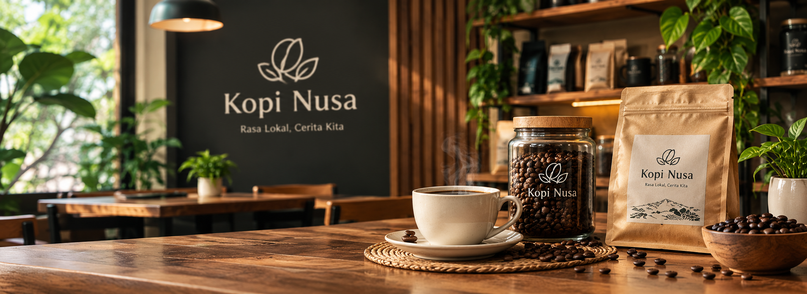

1. Komitmen pada Kopi Lokal
Kopi Nusa berusaha menghadirkan produk kopi lokal dengan cita rasa yang nyaman dinikmati oleh berbagai kalangan.

KOPI NUSA
Teman terbaik untuk setiap langkahmu. Dari biji pilihan, untuk momen yang lebih bermakna.
100% Kopi Lokal · Rasa Berkualitas · Dukung Petani Lokal
Kopi Nusa hadir untuk memperkenalkan kopi lokal dengan rasa yang mudah dinikmati dan cocok untuk menemani belajar, bekerja, maupun berdiskusi.
Kopi Nusa berusaha menghadirkan produk kopi lokal dengan cita rasa yang nyaman dinikmati oleh berbagai kalangan.
Kopi Nusa menyediakan berbagai pilihan minuman, seperti Kopi Garwo Signature, Americano Peach, dan Mojito yang cocok dinikmati saat belajar, bekerja, maupun bersantai.
Kami berusaha menjaga kualitas minuman dan memberikan kenyamanan kepada pelanggan agar setiap produk bisa dinikmati dalam berbagai suasana.